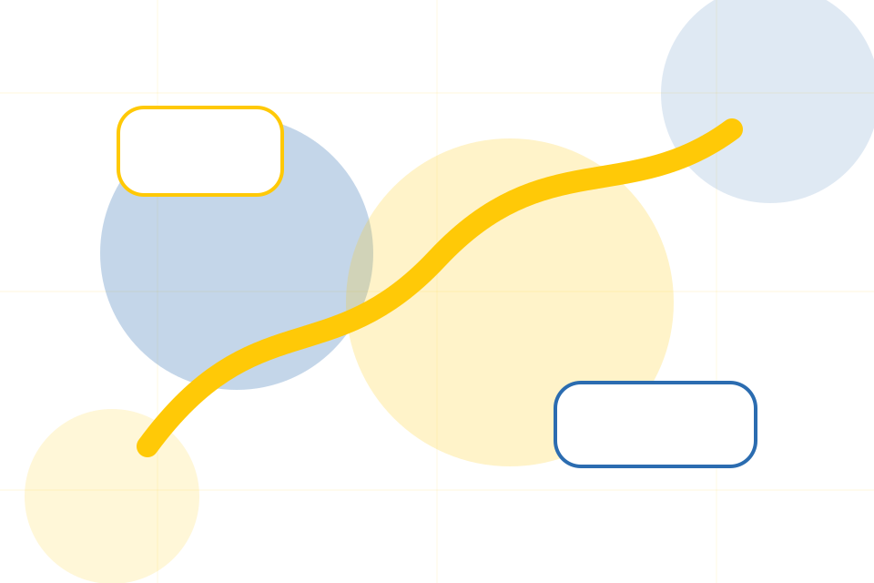
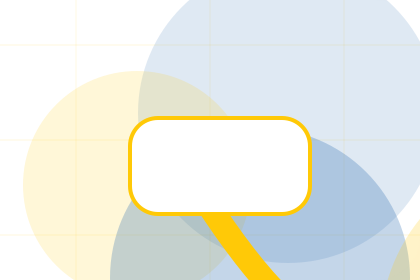
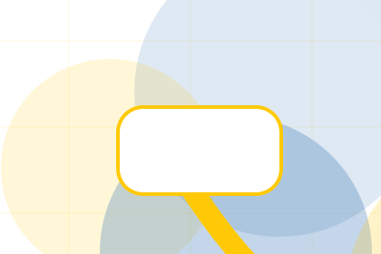
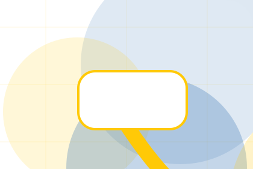
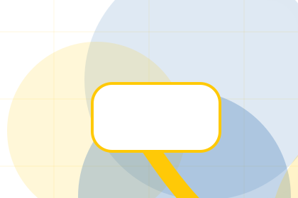
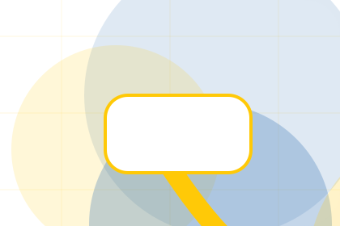
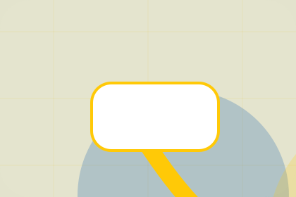

Donate / 01
Donate by Good
Donate shaped for nonprofit, charity & social impact decisions.
Donate opens as a clear nonprofit decision hub: what Good offers, who it helps, why it matters, and which route to take first.
The first screen combines positioning, proof, primary action, and fast internal navigation, so people can act immediately or compare the rest of the donate route with context.
Nonprofit scopeCompare optionsRequest advice
Yellow impact hero
Choose an impact route
Select the closest route and Good keeps the next step, proof, and follow-up expectation aligned with trust and contribution.

Donate / 03
Donate Today
Good closes the donate route with a clear action, a quick reminder of the value, and a low-friction way to donate today.
Visitors who are ready can use the primary action. Visitors who are still comparing can scan the section links, proof, and support routes before they donate today.
Explore DonateReady
Use the primary CTA when the fit is clear and timing matters.
Compare
Review linked proof, questions, and support routes if more context is needed.

Response
Good keeps the next reply focused on scope, timing, and the right first step.
Donate / 04
Donate Today
Good closes the donate route with a clear action, a quick reminder of the value, and a low-friction way to donate today.
Visitors who are ready can use the primary action. Visitors who are still comparing can scan the section links, proof, and support routes before they donate today.
Explore DonateUse the primary CTA when the fit is clear and timing matters.
Review linked proof, questions, and support routes if more context is needed.
Good keeps the next reply focused on scope, timing, and the right first step.
Donate / 05
Donate Today
Good closes the donate route with a clear action, a quick reminder of the value, and a low-friction way to donate today.
Visitors who are ready can use the primary action. Visitors who are still comparing can scan the section links, proof, and support routes before they donate today.
Explore Donate- 01
Ready
Use the primary CTA when the fit is clear and timing matters.
- 02
Compare
Review linked proof, questions, and support routes if more context is needed.
- 03
Response
Good keeps the next reply focused on scope, timing, and the right first step.
Donate / 06
Donate Today
Good closes the donate route with a clear action, a quick reminder of the value, and a low-friction way to donate today.
Visitors who are ready can use the primary action. Visitors who are still comparing can scan the section links, proof, and support routes before they donate today.
Explore DonateThe final block keeps the choice simple: act now, compare one more proof route, or send enough detail for a focused response.
Donate TodayDonate / 07
Trust, not claims
Trust gives the proof layer for donate: standards, evidence, and reassurance that make the next decision feel grounded.
Instead of relying on vague claims, Good presents visible standards, process cues, and proof artifacts that help nonprofit visitors judge fit.
Explore Donate

Evidence
Visible proof that helps visitors believe the claims behind trust.
Donate / 08
Security as proof
Security gives the proof layer for donate: standards, evidence, and reassurance that make the next decision feel grounded.
Instead of relying on vague claims, Good presents visible standards, process cues, and proof artifacts that help nonprofit visitors judge fit.
Explore DonateEvidence
Visible proof that helps visitors believe the claims behind security.

Standard
The quality, safety, or operating expectation this section makes explicit.

Reassurance
What becomes clearer before someone decides whether to donate today.
Donate / 09
Donate Today
Good closes the donate route with a clear action, a quick reminder of the value, and a low-friction way to donate today.
Visitors who are ready can use the primary action. Visitors who are still comparing can scan the section links, proof, and support routes before they donate today.
Explore DonateUse the primary CTA when the fit is clear and timing matters.
Review linked proof, questions, and support routes if more context is needed.
Good keeps the next reply focused on scope, timing, and the right first step.
Donate / 10
Donate Today
Good closes the donate route with a clear action, a quick reminder of the value, and a low-friction way to donate today.
Visitors who are ready can use the primary action. Visitors who are still comparing can scan the section links, proof, and support routes before they donate today.
Donate TodayThe final block keeps the choice simple: act now, compare one more proof route, or send enough detail for a focused response.
Donate Todaytrust and contribution
Donate Today
A donor site with bold yellow impact modules, transparent metrics, story cards, and donation selector. Donate ends with a direct path to donate today, plus enough context for visitors who still need to compare.

Donate Today